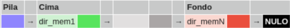

Una pila es una estructura de datos dinámica formada por un grupo ordenado de elementos homogéneos (todos del mismo tipo) en la que los elementos sólo pueden ser añadidos o eliminados por un extremo llamado cabecera o cima (top) de la pila.
De esta forma, los elementos se extraen en orden inverso al seguido en el proceso de inserción. Por ello, una pila es considerada una estructura de datos LIFO (Last In First Out), esto es, que el último elemento que entra es el primero que sale.
Recibe su nombre por su similitud con una pila de objetos; si tenemos una pila de 5 libros, siempre cogemos el de arriba, que es el último que se dejó. Si queremos leer un libro que está en cuarto lugar debemos coger primero el quinto libro y a continuación el cuarto.
Las operaciones básicas que podemos realizar sobre una pila son dos: almacenamiento (push) y recuperación (pop). Para manejar una estructura de datos tipo pila, un programador debe definir un conjunto de operaciones que permitan al usuario acceder y manipular los elementos en ella almacenados. Más adelante se detallará cómo en PHP existen una gran cantidad de funciones predefinidas que permiten gestionar esta estructura de datos de forma eficiente.
Generalmente, cada una de estas operaciones suele recibir un nombre fijo e identificativo de la operación que realiza, siendo la terminología utilizada más común la mostrada a continuación:
Una pila puede ser implementada de dos formas diferentes:
1. Usando una tabla unidimensional (estructura de datos estática).
2. Mediante el uso de punteros (estructura de datos dinámica).
El primer caso, tabla, es más sencillo de implementar, sin embargo, y dado que una pila es una estructura de datos dinámica, el uso de punteros es más lógico. Gráficamente la implementación de una pila usando punteros sería:
El primer caso, tabla, es más sencillo de implementar, sin embargo, y dado que una pila es una estructura de datos dinámica, el uso de punteros es más lógico. Gráficamente la implementación de una pila usando punteros sería:
Cuando se crea la pila el puntero tiene valor Nulo, esto es: